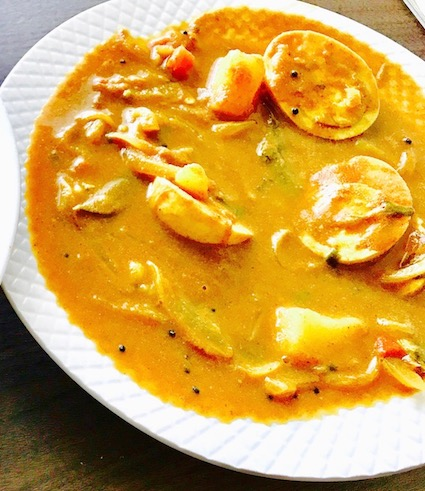

                                    <figure class="recipePage">
                                        <figcaption class="caption">

                                            <!-- Copy Recipie begins here -->
                                            <h1><span style="color: #993366;"><strong>Egg curry</strong></span></h1>
                                            <p><strong>Ingredients</strong></p>
                                            <ul>
                                            <li>Boiled Eggs &ndash; 4 &ndash; Cut into halves.</li>
                                            <li>Onion 1</li>
                                            <li>Tomato 1</li>
                                            <li>Potato 1</li>
                                            <li>Green chillies 2</li>
                                            <li>Oil &ndash; 1 tbsps</li>
                                            <li>Mustard seeds 1/2 tsp</li>
                                            <li>Salt as per taste</li>
                                            <li>1 cup water</li>
                                            </ul>
                                            <p><strong>For Grinding:</strong></p>
                                            <ul>
                                            <li>Onion 1 chopped</li>
                                            <li>Tomato 1 chopped</li>
                                            <li>Grated coconut 2 tbsp</li>
                                            <li>Cilantro a handful</li>
                                            <li>Chilli powder 1 tsp</li>
                                            <li>Turmeric 1 tsp</li>
                                            <li>Green chillies 2</li>
                                            <li>Ginger 1 &ldquo; piece</li>
                                            <li>Garlic- 5 cloves</li>
                                            </ul>
                                            <p><strong>Method</strong></p>
                                            <p>Grind all the ingredients listed for grinding. Peel skin cut and cook potato in microwave using potato option.</p>
                                            <p>Pour oil, splutter mustard, add the chopped onions and saut&eacute; till it gets soft. Add the tomatoes and cook for 2 minutes. Add green chillies and salt. Add cooked potato and the ground mixture and mix it all thoroughly. Add water and bring it to boil. Now add the eggs. Cook for a couple of minutes till the gravy thickens. Serve with appam/rice/ roti/idiyappam/bread.</p>
                                            <p>&nbsp;</p>
                                            <p>&nbsp;</p>
                                            <!-- Copy Recipie ends here -->
                                        </figcaption>
                                    
                                    </figure>
                                    